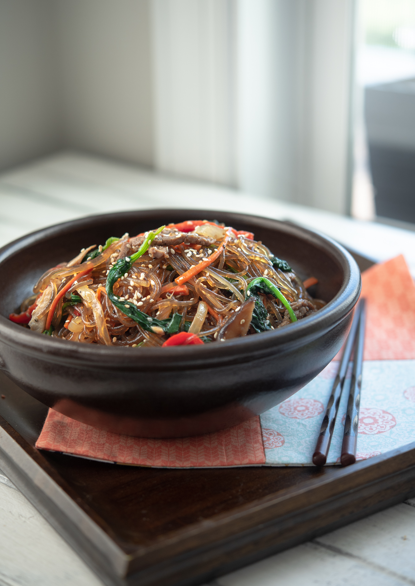

JAPCHAE: KOREAN STIR-FRIED GLASS NOODLES

Preparation time:
2 hours
INGREDIENTS
- Sweet potato noodles
- Onion
- Carrot
- Pepper
- spinach
- Shiitake mushrooms
- Beef/Pork
- Soy sauce
- Gralic
- Sugar
- Sweet rice Wine
- Oils
- Sesame seeds
METHOD
-
Soak the noodles in hot water for 15 minutes, then drain and set aside.
Pre-soaking will soften the noodles and make them easier to cook.
-
Slice beef (or pork) into thin match sticks and season with soy sauce,
sugar, and rice wine; set aside.
-
In a mixing bowl, combine all the japchae sauce ingredients, and set
aside.
-
Heat 1 tablespoon oil in a large skillet or wok over medium high heat.
Add onion, carrot, pepper, and a pinch of salt; stir-fry until soft.
-
Add the sliced shiitake mushrooms and another pinch of salt. Continue to
stir-fry until they become soft. Stir-fry the spinach until it wilts,
and add it at the end.
-
Remove the skillet from the heat and transfer the vegetables to a large
plate to cool.
-
Reheat the pan over high heat with 1 tablespoon of oil, then add the
beef (or pork) and stir-fry until fully cooked. You will see the juice
coming out from the meat.
-
Transfer the meat to the large plate with the reserved vegetables,
reserving the juice in the pan.
-
Drain the noodles from soaking and add them to the pan with the meat
juices.
- Pour the japchae sauce over the noodles and toss to combine.
-
Allow the noodles to cook over medium heat until they become soft and
absorb most of the liquid from the sauce.
-
Reduce the heat to low. Add the vegetables and meat back to the pan over
the noodles.
- Add sesame seeds and toss all together to incorporate.
-
Drizzle more sesame oil if you wish. Taste and season more according to
your taste.
Main Menu